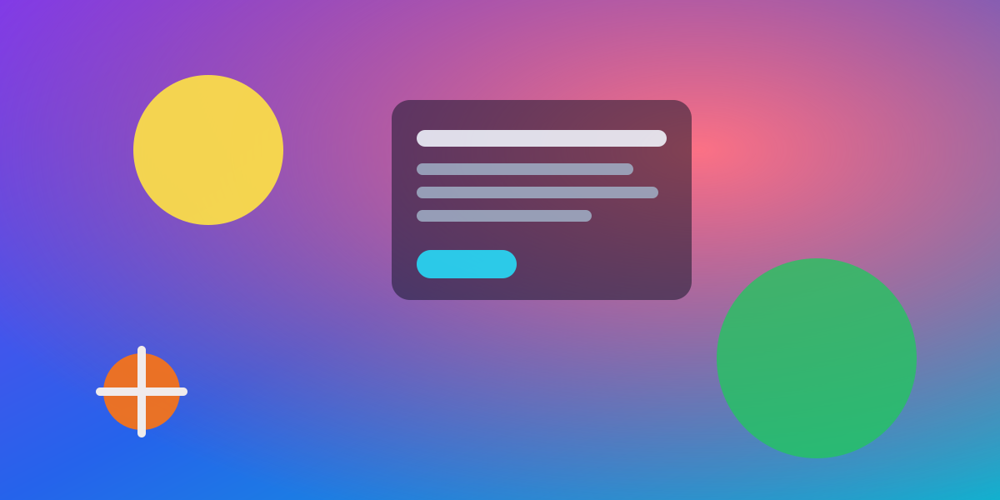
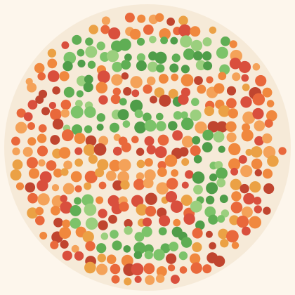

Design & Accessibility
The web wasn't built for everyone. A tiny toolbar is trying to fix that.

Open almost any website and you'll meet a wall of small, low-contrast, tightly packed text. For most people it's a mild annoyance. For someone with dyslexia, low vision, ADHD, color blindness, or simply tired, aging eyes, that same wall can make a page nearly unusable. The information is there — it's just locked behind type that's too small, lines that run too long, and colors that blur together.
The usual advice is to wait for every site on the internet to fix itself. That is not a plan. So a growing class of tools flips the model: instead of fixing ten million sites, you carry your own reading preferences with you and apply them to whatever page you land on. A11y Companion is one of these — a personal accessibility toolbar that lives in your browser and works on every site you visit.
"Accessibility isn't a feature you bolt onto one website. It's something a reader should be able to bring with them everywhere."
What it actually does
The toolbar groups its tools into a few simple ideas: change the text, change the color, and let the page speak or take commands. None of it requires the website to cooperate.
Reading and text
- Bigger text and spacing — scale the font and open up letter and line spacing without breaking the layout.
- Dyslexia-friendly font — swap the whole page to OpenDyslexic in one tap.
- Reading mode — strip a page down to just the article, dim everything else, and reflow it into a clean column.
- Reading ruler — a focus band that follows your pointer and dims the rest, so you never lose your line.
Color and vision
Beyond grayscale, dark mode, and high contrast, it ships real color-blindness simulations built on color-matrix filters — useful both for people who need them and for designers checking their work. Consider the classic color-vision plate below: many people read a number in it instantly, while others see only dots. Switch the color mode to Deuteranopia on the toolbar and watch the figure fade.

Speech and control
Point your mouse at any line and the screen reader speaks it aloud after a short pause. Press play and the whole article is read aloud in chunks with a moving highlight. Turn on voice commands and you can say "scroll down," "reading mode," or even "click add to chrome" — entirely hands-free.
| Audience | Common need | Tool that helps |
|---|---|---|
| Dyslexia | Letter clarity & spacing | OpenDyslexic font, ruler |
| Low vision | Larger, higher-contrast text | Text size, high contrast |
| Color blindness | Distinguishing hues | Color-blindness filters |
| ADHD / focus | Fewer distractions | Reading mode, reduce motion |
| Light sensitivity | Lower glare | Invert / dark mode |
Privacy by design
The cleverest part might be the quietest: the experimental summarize and simplify features run on Chrome's built-in on-device AI model. Page text is processed on your own machine — there are no servers, no accounts, and no analytics. Your settings sync across your own devices through your browser account, and nothing else leaves your computer.
It is, in the end, a small idea executed carefully: the reader, not the website, decides how the web should look and sound. Try it right now using the toolbar at the bottom of this page — or take the guided tour.